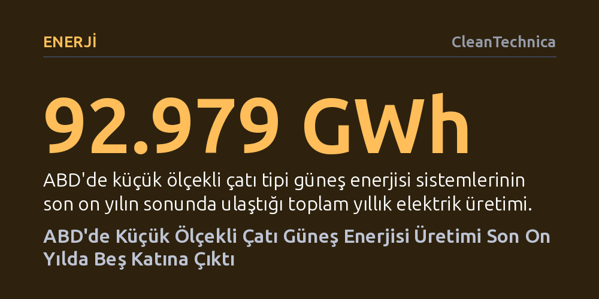

ENERJI · CleanTechnica · 2026-10-17
ABD'de küçük ölçekli çatı tipi güneş enerjisi üretimi, eyalet teşvikleri ve kapasite artışıyla son on yılda yaklaşık beş katına çıkarak 93 bin gigavatsaate ulaştı. Güneş zengini eyaletlerin sırtladığı bu üretimde, mevzuat değişiklikleri nedeniyle 2022 sonrasında büyüme hızı yavaşlıyor.
Yenilenebilir enerjiye geçişin sadece dev santrallerle değil, doğru eyalet teşvikleriyle desteklenen milyonlarca bireysel çatıyla da ulusal şebekeyi dönüştürebileceğini gösteriyor.

Amerika Birleşik Devletleri'nde elektrik üretim altyapısı köklü bir dönüşümden geçiyor. Bu değişimin en dinamik ayaklarından birini ise merkezi elektrik santralleri değil, evlerin ve küçük ticari binaların çatılarına kurulan 1 megavatın altındaki küçük ölçekli güneş sistemleri oluşturuyor. Enerji Bilgi İdaresi'nin (EIA) verilerine göre, ABD genelinde çatı panellerinden elde edilen elektrik üretimi son on yılda 18.812 gigavatsaatten (GWh) 92.979 gigavatsaate yükselerek yaklaşık beş katına ulaştı.
Bireysel kurulumlardaki bu sıçrama, sadece hanelerin elektrik faturalarını düşürmekle kalmadı; aynı zamanda yaz aylarında şebekeye binen en yüksek tüketim saatlerinde dağıtık enerjinin dengeliyici bir güce dönüşmesini sağladı. On yıl önce toplam elektrik üretiminde marjinal bir paya sahip olan çatı üstü güneş sistemleri, günümüzde bağımsız bir dev enerji santrali büyüklüğüne ulaşmış durumda.
Ülke genelindeki çatı tipi üretimin coğrafi dağılımı incelendiğinde, ilk sıraları doğal olarak güneş ışınımının en bol olduğu eyaletler paylaşıyor. California, 2025 yılı itibarıyla 34.411 GWh üretimle ulusal toplamın yüzde 37'sini tek başına karşılayarak tartışmasız liderliğini koruyor. Onu yıllık 5.795 GWh üretim ve yüzde 6'yı aşan payıyla Arizona izliyor. Benzer şekilde Teksas ve Florida da son yıllarda olağanüstü bir ivme yakalayarak üretimlerini binlerce gigavatsaate çıkardı; Teksas 2016'da sadece 391 GWh üretirken geçen yıl 5.408 GWh'ye, Florida ise aynı dönemde 205 GWh'den 5.198 GWh seviyesine tırmandı.
Ancak bu tablonun en dikkat çekici istisnası New York. Güneşlenme potansiyeli güney eyaletlerine kıyasla çok daha sınırlı olan New York, teknoloji yatırımları ve agresif eyalet teşvikleri sayesinde ülkenin en büyük beşinci çatı üstü güneş enerjisi üreticisi konumuna yerleşti. Bu durum, New Jersey, Massachusetts ve Illinois gibi diğer kuzey eyaletlerinde de görüldüğü üzere, yerel teşvik ve düzenlemelerin coğrafi dezavantajları aşmada ne kadar belirleyici olduğunu ortaya koyuyor.
Çatı üstü güneş enerjisi üretimini takip etmek, geleneksel termik veya hidroelektrik santralleri izlemekten oldukça farklı bir metodoloji gerektiriyor. Elektrik dağıtım şirketleri, şebekelerine kaç tüketicinin çatı sistemi bağladığını ve toplam kurulu kapasiteyi bilse de, panellerin doğrudan evin içinde anlık olarak tüketilen elektriği ne kadar karşıladığını tam olarak ölçemiyor. Dağıtım şirketlerinin göremediği bu tüketim nedeniyle resmi kurumlar doğrudan sayaç ölçümü yerine matematiksel tahmin modellerine başvurmak zorunda kalıyor.
EIA, bu boşluğu doldurabilmek için Ulusal Yenilenebilir Enerji Laboratuvarı'nın (NREL) geliştirdiği Sistem Danışman Modeli (SAM) ve PVWatts gibi gelişmiş simülasyon araçlarından yararlanıyor. Araştırmacılar, California'daki çatı sistemlerinden toplanan panel eğim açıları ve yönelim verilerini referans alarak bunları diğer eyaletlerin hava durumu ve ışınım parametreleriyle harmanlıyor. Böylece ülke geneline yayılmış milyonlarca küçük panelin fiili elektrik üretimi yüksek bir doğrulukla hesaplanabiliyor.
Çatı güneşindeki bu hızlı yükseliş eğrisi kesintisiz ve tekdüze bir ivmeyle sürmüyor. Sektör 2022 yılında bir önceki yıla göre yüzde 25'lik rekor bir üretim artışıyla zirveye ulaşmıştı. Bu patlamanın arkasında büyük ölçüde düzenleyici mevzuattaki yaklaşan tarife değişiklikleri yatıyordu. Örneğin en büyük pazar olan California'da cömert şebekeye satış imkanı sunan NEM 2.0 programı Nisan 2023'te sona erdirildi. Tüketicilerin daha düşük getiri sağlayan yeni NEM 3.0 tarifesine yakalanmamak için eski haklarını koruma amacıyla kurulumları öne çekmesi, 2022 ve 2023 başında yapay bir talep patlaması yarattı.
Teşviklerin geri çekilmesi veya net ölçümleme gelirlerinin kırpılması, son yıllarda genel üretim büyümeye devam etse de yıllık artış hızının belirgin biçimde yavaşlamasına yol açtı. Nitekim Arizona'da yüzde 25'lik eyalet gelir vergisi indirimi gibi destekler sürse bile 2025'teki büyüme yüzde 6 seviyesinde kaldı. Çatı tipi güneş enerjisinin geleceği, yalnızca panel verimliliğine değil, eyaletlerin şebeke entegrasyonu ve elektrik fiyatlandırma politikalarında alacağı kararlara doğrudan bağımlı görünüyor.